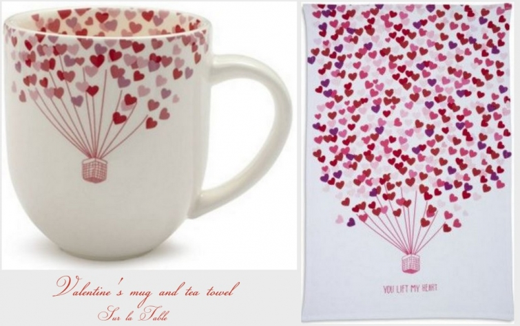
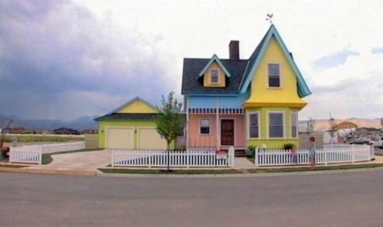

.png)
.PNG)
.PNG)
.PNG)
.PNG)
.PNG)
.JPG)
.JPG)
.PNG)
.PNG)


Because today is the day of love, I want to take this weekend post in a little different direction. Several years ago, Sur la Table offered a couple of very cute items in their Valentine’s Day line up. Unfortunately, they are not available anymore, but all those balloons made me think of the movie, UP.

Pixar packed so much heart into the montage at the beginning of that movie that it has become more than just part of a cartoon. It is a love story of a life long love, and what better way to celebrate Valentine’s Day than with that life long love from all things UP? 🙂 Let’s start with the house (of course!)
There have been real homes inspired by the film.
source
You can even tour one of them here:
There have been gingerbread houses that are modeled after it.
And flying houses like in the movie.
There have been house plans made of Carl and Ellie’s house.
There have been many sweet birthday parties inspired by the movie…
Like this one.
And cupcakes that recreate the flying house scene.
There have been cute cookies made to look like Carl and the house.
An 80 year old couple even made a piano duet video in UP movie style.
Some couples have been so inspired by the movie that they have included many of the elements from it in their wedding.
My favorite has been this couple’s engagement shoot.
(Part 1 here)

Part 2 here
And the very precious wedding here.
(If you have not seen it, you really need to click on the link and read the narrative with the shoot. It’s pretty amazing. 🙂 )
Now let’s take a look at two scenes from the actual movie.
First meet Ellie:
And now the part that has inspired all the love stories..Carl and Ellie’s married life.
(Get your hankie ready. It’s a real tear jerker.)
Okay, I am not going to leave you all sniffle-ly sad.
Here are a couple of little quizzes you can take just for fun. 🙂
1. Which Pixar couple are you and your significant other? (click here.)
and
2.Which Female Pixar Character are you? (click here.)
Look who I got!!
(Not sure that’s exactly a correct analysis, but I’ll take it! )
I hope you have a great Valentine’s Day!
Share some chocolate with someone near and dear. 🙂
Until next time,

p.s. This one is for my wonderful-extremely-patient-love-at-first-sight husband.


.PNG)
We love UP so much, one of our dogs is named “Doug” after the talking dog in the film! I love how you research things. I would have never known about these cute ideas!
What a sweet post! I sent the link to my 24yo twin daughters, and one of them told me she was SO going to have a Paradise Falls jar at her wedding. Not that she’s getting married, mind you, nor is she even dating anyone. But she loved the idea! 🙂
Ellie and Carl’s love story makes me cry every.single.time. Such a precious, precious relationship. After all, isn’t that what love is all about? Thank you for sharing. Loved it all!
Hi Kelly! Such a sweet post! I love UP too it is a beautiful story so fun and poetic at the meantime! I hope you spent a wonderful Valentine’s Day and that everyone enjoyed the chili!
Xoxo
Claire
That <3 balloon cup is so cute and I'm not even a <3 fan. Love the balloon cookies too. I must love balloons! 😀
I cannot watch the beginning of UP without crying. The relationship between Ellie and Carl make me think of both sets of my grandparents. I do love the movie just have to have a hankie ready at the beginning.
This is a very cute movie and our oldest daughter did the granddaughter’s nursery in the theme of the “Up” movie. My sister in-law also made this baby an “Up” quilt. Cute post and not your typical Valentine’s Day blog post.
Cute House! Sur La Table is where I first learned the wonderful magic of Cuisinart magic, 1986. Vintage.
What a sweet post! I loved the movie, UP. Have a great Valentine’s Day!!
i don’t usually comment on blog sites…but! i REALLY enjoyed this post today! thank you 🙂
Kelly,
Happy St. Valentine’s Day to you too! Thanks for the super sweet post. We love the movie Up around here. My husband would not go for a house like Carl and Ellie’s for sure. It sure is cute and a fun idea though. Now I am off to take those quizzes. They look fun. Thanks for sharing. Take care.
Dawn
I love your post . My husband and I feel like we will be Carl and Ellie in our older years . I so enjoy watching the movie and I always cry .
Happy Valentine’s Day to you !
Kelly….You totally had me crying. Ugh, two Kleenex later….What an adorable post. I have not seen the movie but want to now. Carl and Ellie’s Married life…sniff! So cute. That house was adorable, the old couple video ..so sweet. I will have to check out the other related wedding inspires. What a cute post. Happy Valentines Day to you and yours. P. S. I was Ellie too.
What fun! Thanks for the very special Valentine.
Such a sweet, sweet post today. Perfect for Valentine’s Day. Thank you Kelly.
Just lovely!
I’ve never seen the movie, but what you’ve posted here has given me a good idea of it. Very sweet! Thanks for the bride & groom pics also. I got Ellie too btw, Happy Valentines Day Kelly 🙂
Kelly,
What a fun post. I remember the sur la table balloon items, they were charming. Wish I had picked up a mug.
I took the first test and it said we were Mike Wazowski & Celia from Monsters Inc. Ha! The second quiz wouldn’t load properly. I may try it later.
Enjoy your Valentine’s Day.
xo,
Karen
This is a gorgeous post. I love all of the colours in Up (and would love a multi-coloured painted house – can just imagine my husband’s face at the suggestion though LOL)
I got Ellie too!
Happy Valentine’s Day 🙂